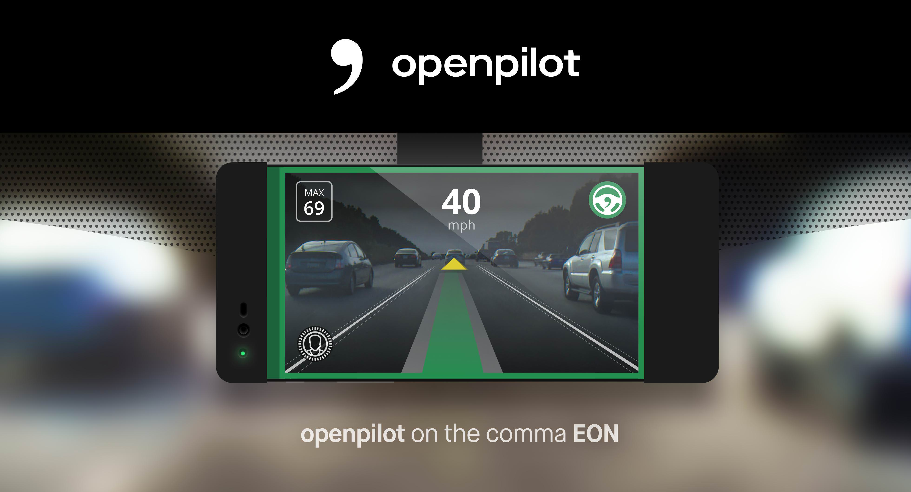

We're in the market for a new car and have been looking at the Tesla's 'entry level' Model 3 starting around $35k. There are some questions and many rumors around Tesla, but the federal tax credits on Teslas run out this December so the default 'wait and see' option has an additional $1,875 lost tax credit cost. The tax credit started at $7,500 and ramps down to $0 once a particular EV manufacturer sells over 200,000 units (the Tesla is the best selling EV in the US).
We've test driving the Tesla 3 along with somewhat comparably priced compact SUVs. The statistician would complain these are incompatible categories and violate the economic substitution principle.
Even though I've been following Lex Fredman's MIT lectures on AI in general (and self-driving cars in particular), I was surprised by the disappointing gap between theoretical promise of the Tesla and the practical implementation. The Tesla 3 performance was superb and design excellent, but I was expecting Level 3 (no hands) rather than Level 2 automation. Worse yet, it looks like major car manufacturers are further delaying my fully autonomous Level 5 flying car of the Jetsons above.
Long before the Tesla 3 became available this February 2019 there have been religious wars over the Tesla brand. Perhaps largely animated by Elon Musk's public persona, there two clear camps of inveterate groupies and haters. Informal sentiment analysis gives me the impression the modus operendi is significantly different between the haters and groupies. Haters hammer on statistically dubious claims like someone in Finland suing for a questionable paint job. Groupies wax poetically about the emotional experience of ownership. This low signal/noise ratio along with the brief track record of the model 3 makes it difficult to make an informed decision as a consumer.
(down to
New York Times

https://comma.ai/
https://news.ycombinator.com/item?id=19893283